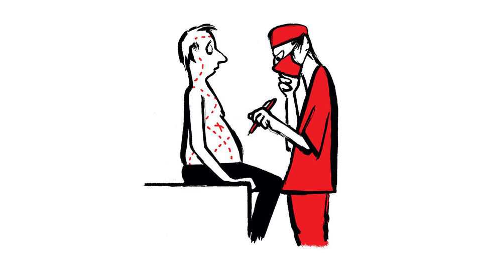
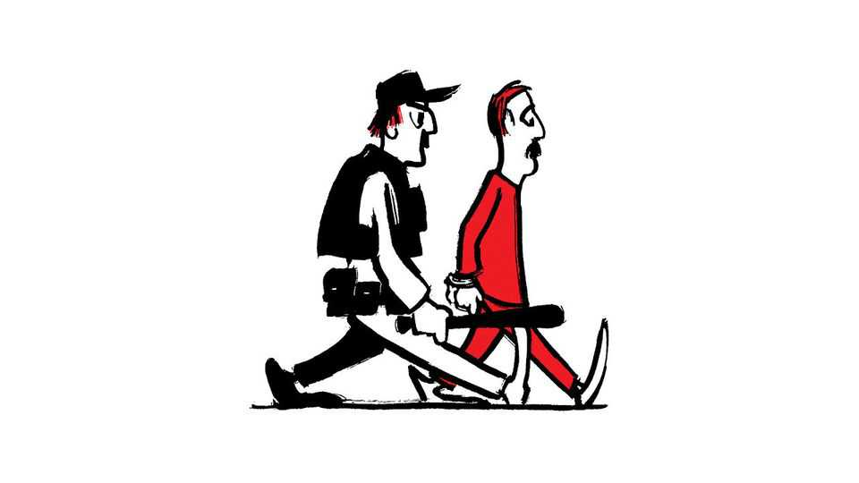

Is back and shoulder surgery often worse than useless?
Also this week, retro capitalism, mistaken identity, summer, AI-generated speeches

Oct 8th 2026
Letters are welcome via email to letters@economist.comFind out more about how we process your letter
Back and shoulder surgery is often worse than useless, you say (“The cost of cutting”, September 26th). You cast surgeons as the problem: “If your only tool is a scalpel, everything looks ripe for cutting.” My experience as an orthopaedic registrar is often the reverse. During our shoulder and spine clinics, much time is spent trying to talk patients out of operations. Many arrive convinced that a specific procedure is the only thing that will fix them. That belief may come from a friend, a referral letter, the internet or an MRI report describing a “tear” (which is also common in people with no pain at all). They are in pain, and their hope is pinned to surgery.
Unpicking that in a 20-minute appointment is hard, especially when the evidence is thin. We can rarely say an operation won’t work, only that it hasn’t been shown to work. “We don’t know” is no match for hope. Better trials would give us firmer answers to offer.
You call for shared decision-making. In my experience this already happens, but it often tips the other way. When a well-informed patient still insists on an operation, respecting that choice usually means offering it. Publicly funded trials, largely led by surgeons, will help. Changing the expectations that patients bring through the door matters just as much.
Dr Jack HanlonOrthopaedic registrarDunedin, New Zealand
To say that surgeons lack education on non-operative care is false. Personally, I operate on about one in ten patients who appear in my office. That factor is even larger for my spine-focused colleagues (I am mostly a brain surgeon). Although there is no question that some unnecessary surgery happens, a lack of access to surgical care also results in unnecessary suffering. Large parts of the country are deprived of neurosurgical care. It is very common to have surgical referrals occur long after the guidelines suggest surgical evaluation.
It is true that large parts of the American medical system have become extractive. Yet it is plainly wrong to argue that the bulk of the blame falls on surgeons.
Dr Chuck MikellAssociate professorDepartment of NeurosurgeryStony Brook MedicineState University of New York, Stony Brook
As a physiotherapist, I find myself agreeing with much of your premise. In my clinical experience, the vast majority of back and shoulder surgeries do not necessarily deliver outcomes that are significantly better than those that can be achieved through appropriate conservative management and rehabilitation. However, I believe the issue is more complex than simply blaming surgeons for operating.
A significant part of the challenge lies in patient expectations. Many people understandably want to be “fixed” and are often more attracted to the prospect of a surgical solution than committing to the rehabilitation, exercise and lifestyle changes that may improve their condition. It is frequently easier to take medication, adopt a wait-and-see approach, and then seek more invasive options when symptoms persist. By that stage, surgery can appear to be an attractive answer, even though the rehabilitation required afterwards may be remarkably similar to what could have been undertaken in the first place. In my experience many surgeons don’t fully educate their patients on the post-operative rehabilitation required.
Then there is the broader problem of health literacy. As a society, we still struggle with the concept that movement, strength, physical activity and self-management are often the most effective interventions for many musculoskeletal conditions. People understandably seek quick fixes, yet the evidence repeatedly shows that maintaining activity, building strength and engaging in appropriate rehabilitation remains the cornerstone of long-term improvement.
Matt HaycockAPM WorkcareAuckland, New Zealand
The illustration accompanying Schumpeter’s column on retrofuturism in Silicon Valley (September 12th) playfully tapped into a famous television advertisement in Britain during the 1980s for audio tapes. The ad featured Peter Murphy, the lead singer of the Bauhaus, who named themselves after the Bauhaus architecture movement that started in Germany after the first world war. Therein lies my point, that looking backwards with false nostalgia has always been integral to the human condition and helps explain why “American capitalism should be so obsessed with the past as it hurtles ceaselessly towards the future”. Anyone familiar with the steampunk genre will recognise the perfect melding of past and future.
Yours through rose-tinted spectacles.
Jonathan HawkesLondon

I can commiserate with Jeff Miller, the writer from New Jersey who has endured bureaucratic nightmares applying for a driving licence because of the bad deeds of another man named Jeff Miller (“Why governments waste your time”, September 26th). I routinely get pulled aside at airport security because also I share a name with a criminal on the watch list. About 20 years ago the New York bar threatened to disbar me for the felonious acts of yet another Jeff Miller. Proving that I was not him was considerably harder than one might imagine.
This is not even a new problem. I wrote an article in March 1999 about my experiences up to that point, “All the Jeffrey Millers” in the Expository Times. And not too long ago I tried a case against a lawyer who was also named Jeff Miller. The right Miller prevailed.
JEFFREY H. MILLERNorth Woodmere, New York
Searing heat because of climate change will mean the end of summer as a “carefree” break from responsibilities, you say (Back Story, September 12th). Yet humans are remarkably adaptable. Yes, hotter summers will bring challenges, and extreme heat deserves our attention. But you leap from there to the melodramatic conclusion that summer festivals, romance, swimming, childhood adventures and outdoor gatherings are headed for extinction.
Really? People have air conditioning, shade, pools, evening hours, sunscreen and an uncanny ability to adjust. We already know how to deal with a hot afternoon. We find some shade, jump in the pool, and wait until evening.
As the old song says, “Summertime, and the livin’ is easy.” It just may occasionally require a little more sunscreen.
Jason RussellLehi, Utah
AI-generated text is being speedily adopted in parliamentary speeches, which you reflected on in your leader on “The perils of AI writing” (September 26th). Yet the cause for concern extends beyond shoddy AI-generated prose. Mass-market AI technologies generate through obedience and replication. That may suit authoritarian regimes, whose viability depends on adherence to instructions and reinforcing old messages. In these respects, the AI bot is an autocrat’s perfect subject. But democratic marketplaces of ideas, of which parliaments should be leading examples, require innovation and imagination, not just imitation.
Edmund Burke’s words still ring true: “Your representative owes you, not his industry only, but his judgment.” AI tools are helpful for writing, as for much else, but the wholesale delegation of political reflection to AI sacrifices both industry and judgment. There are many reasons why humans should want to remain in control of their own thought and expression. Democracy is one of them.
Gavin CharlesSpeechwriter, humanInternational Institute for Democracy and Electoral AssistanceStockholm
Defenders of AI writing tend to claim the result is the same, and the process shouldn’t matter. Being a good writer is hard after all. But the process is the whole point of being a writer. Maybe the process is the whole point of everything. Just as you wouldn’t respect someone who took a helicopter to the summit of Everest for their mountaineering prowess, you wouldn’t respect someone who slapped their name on a novel written by Claude.
ERLING FASTINGOslo
Ryan Jacobs tells us that his By Invitation column (September 12th) wasn’t written by an AI, but “so what if it had been!” I want to read articles that have come from the mind of an author. Yes, the writings of the human author may have more errors and omissions and be less polished than AI, but to err is human.
Simon AugerWelwyn Garden City, Hertfordshire
I find it appealing and disturbing that the great Roald Dahl had foreseen this development in his short story, “The Great Automatic Grammatizator”, in 1954.
Eduard ZappRatingen, Germany
“Writes and wrongs” (September 26th), noted how humans often “prefer to read humans”. Imagine the irony, then, of hearing this narrated by AI on your digital editions.
Jeff HewittLos Angeles